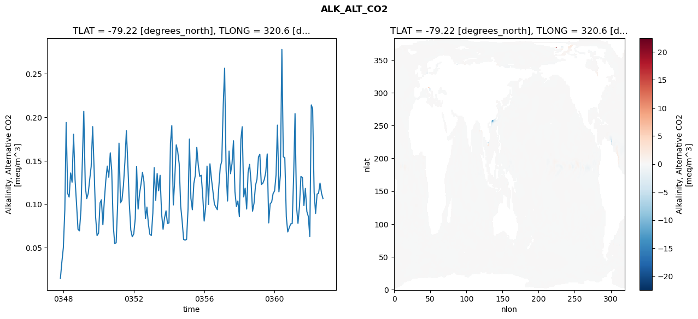
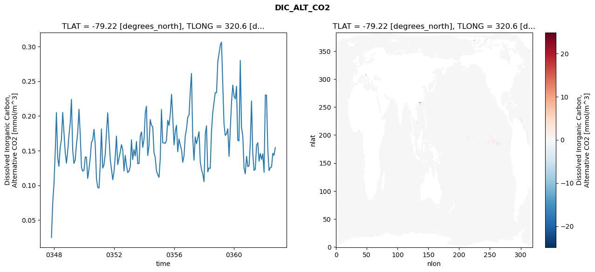
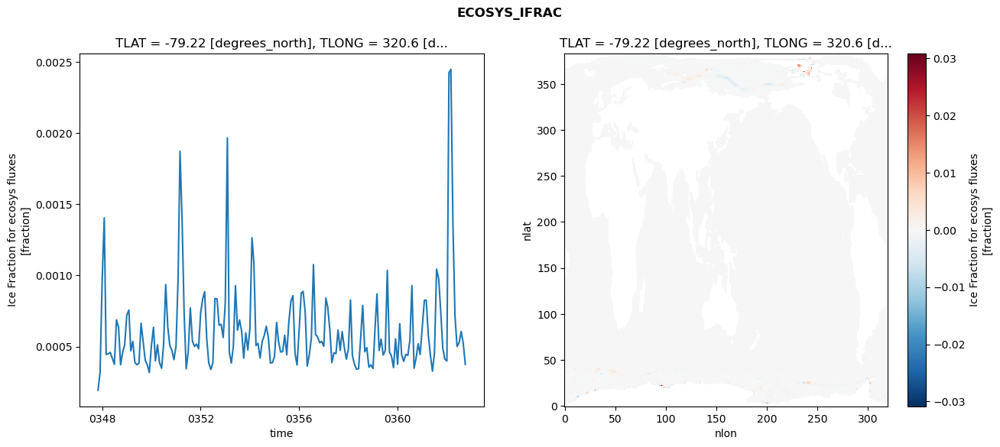
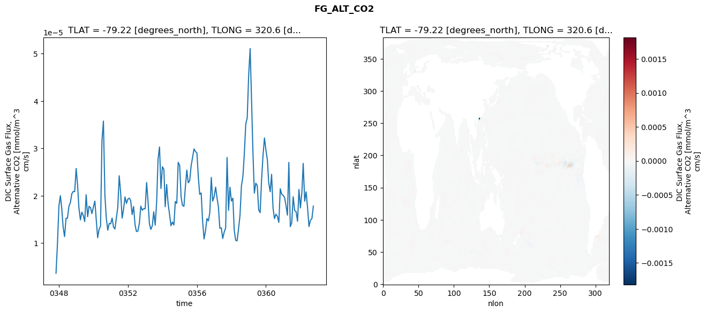

glb-dor_North_Atlantic_basin_036_1999-10-01_00147#
Simulation details#
Case: smyle.cdr-atlas-v0.glb-dor_North_Atlantic_basin_036_1999-10-01_00147.001
Basin: North_Atlantic_basin
Polygon: 36.0
Start date: 1999-10
Show code cell source Hide code cell source
import xarray as xr
import matplotlib.pyplot as plt
Show code cell source Hide code cell source
zarr_store = "/path/to/zarr/store"
# Parameters
zarr_store = "/global/cfs/projectdirs/m4746/Projects/Ocean-CDR-Atlas-v0/data/validation/smyle.cdr-atlas-v0.glb-dor_North_Atlantic_basin_036_1999-10-01_00147.001.validation.zarr"
Show code cell source Hide code cell source
%%time
ds_o = xr.open_zarr(zarr_store).compute()
ds_o
CPU times: user 670 ms, sys: 400 ms, total: 1.07 s
Wall time: 1.38 s
<xarray.Dataset> Size: 2MB
Dimensions: (nlat: 384, nlon: 320, time: 180)
Coordinates:
TLAT float64 8B -79.22
TLONG float64 8B 320.6
ULAT float64 8B -78.95
ULONG float64 8B 321.1
* time (time) object 1kB 0347-11-01 00:00:00 ... 0362-10-01 0...
z_t float32 4B 500.0
Dimensions without coordinates: nlat, nlon
Data variables:
ALK_ALT_CO2_diff (nlat, nlon) float32 492kB nan nan nan ... nan nan nan
ALK_ALT_CO2_rmse (time) float64 1kB 0.01471 0.03337 ... 0.1127 0.1065
DIC_ALT_CO2_diff (nlat, nlon) float32 492kB nan nan nan ... nan nan nan
DIC_ALT_CO2_rmse (time) float64 1kB 0.02493 0.0749 ... 0.1433 0.1543
ECOSYS_IFRAC_diff (nlat, nlon) float32 492kB nan nan nan ... nan nan nan
ECOSYS_IFRAC_rmse (time) float64 1kB 0.0001944 0.0003198 ... 0.0003759
FG_ALT_CO2_diff (nlat, nlon) float32 492kB nan nan nan ... nan nan nan
FG_ALT_CO2_rmse (time) float64 1kB 3.609e-06 9.729e-06 ... 1.78e-05xarray.Dataset
- nlat: 384
- nlon: 320
- time: 180
- TLAT()float64-79.22
- long_name :
- array of t-grid latitudes
- units :
- degrees_north
array(-79.22052261)
- TLONG()float64320.6
- long_name :
- array of t-grid longitudes
- units :
- degrees_east
array(320.56250892)
- ULAT()float64-78.95
- long_name :
- array of u-grid latitudes
- units :
- degrees_north
array(-78.95289509)
- ULONG()float64321.1
- long_name :
- array of u-grid longitudes
- units :
- degrees_east
array(321.12500894)
- time(time)object0347-11-01 00:00:00 ... 0362-10-...
- bounds :
- time_bound
- long_name :
- time
array([cftime.DatetimeNoLeap(347, 11, 1, 0, 0, 0, 0, has_year_zero=True), cftime.DatetimeNoLeap(347, 12, 1, 0, 0, 0, 0, has_year_zero=True), cftime.DatetimeNoLeap(348, 1, 1, 0, 0, 0, 0, has_year_zero=True), cftime.DatetimeNoLeap(348, 2, 1, 0, 0, 0, 0, has_year_zero=True), cftime.DatetimeNoLeap(348, 3, 1, 0, 0, 0, 0, has_year_zero=True), cftime.DatetimeNoLeap(348, 4, 1, 0, 0, 0, 0, has_year_zero=True), cftime.DatetimeNoLeap(348, 5, 1, 0, 0, 0, 0, has_year_zero=True), cftime.DatetimeNoLeap(348, 6, 1, 0, 0, 0, 0, has_year_zero=True), cftime.DatetimeNoLeap(348, 7, 1, 0, 0, 0, 0, has_year_zero=True), cftime.DatetimeNoLeap(348, 8, 1, 0, 0, 0, 0, has_year_zero=True), cftime.DatetimeNoLeap(348, 9, 1, 0, 0, 0, 0, has_year_zero=True), cftime.DatetimeNoLeap(348, 10, 1, 0, 0, 0, 0, has_year_zero=True), cftime.DatetimeNoLeap(348, 11, 1, 0, 0, 0, 0, has_year_zero=True), cftime.DatetimeNoLeap(348, 12, 1, 0, 0, 0, 0, has_year_zero=True), cftime.DatetimeNoLeap(349, 1, 1, 0, 0, 0, 0, has_year_zero=True), cftime.DatetimeNoLeap(349, 2, 1, 0, 0, 0, 0, has_year_zero=True), cftime.DatetimeNoLeap(349, 3, 1, 0, 0, 0, 0, has_year_zero=True), cftime.DatetimeNoLeap(349, 4, 1, 0, 0, 0, 0, has_year_zero=True), cftime.DatetimeNoLeap(349, 5, 1, 0, 0, 0, 0, has_year_zero=True), cftime.DatetimeNoLeap(349, 6, 1, 0, 0, 0, 0, has_year_zero=True), cftime.DatetimeNoLeap(349, 7, 1, 0, 0, 0, 0, has_year_zero=True), cftime.DatetimeNoLeap(349, 8, 1, 0, 0, 0, 0, has_year_zero=True), cftime.DatetimeNoLeap(349, 9, 1, 0, 0, 0, 0, has_year_zero=True), cftime.DatetimeNoLeap(349, 10, 1, 0, 0, 0, 0, has_year_zero=True), cftime.DatetimeNoLeap(349, 11, 1, 0, 0, 0, 0, has_year_zero=True), cftime.DatetimeNoLeap(349, 12, 1, 0, 0, 0, 0, has_year_zero=True), cftime.DatetimeNoLeap(350, 1, 1, 0, 0, 0, 0, has_year_zero=True), cftime.DatetimeNoLeap(350, 2, 1, 0, 0, 0, 0, has_year_zero=True), cftime.DatetimeNoLeap(350, 3, 1, 0, 0, 0, 0, has_year_zero=True), cftime.DatetimeNoLeap(350, 4, 1, 0, 0, 0, 0, has_year_zero=True), cftime.DatetimeNoLeap(350, 5, 1, 0, 0, 0, 0, has_year_zero=True), cftime.DatetimeNoLeap(350, 6, 1, 0, 0, 0, 0, has_year_zero=True), cftime.DatetimeNoLeap(350, 7, 1, 0, 0, 0, 0, has_year_zero=True), cftime.DatetimeNoLeap(350, 8, 1, 0, 0, 0, 0, has_year_zero=True), cftime.DatetimeNoLeap(350, 9, 1, 0, 0, 0, 0, has_year_zero=True), cftime.DatetimeNoLeap(350, 10, 1, 0, 0, 0, 0, has_year_zero=True), cftime.DatetimeNoLeap(350, 11, 1, 0, 0, 0, 0, has_year_zero=True), cftime.DatetimeNoLeap(350, 12, 1, 0, 0, 0, 0, has_year_zero=True), cftime.DatetimeNoLeap(351, 1, 1, 0, 0, 0, 0, has_year_zero=True), cftime.DatetimeNoLeap(351, 2, 1, 0, 0, 0, 0, has_year_zero=True), cftime.DatetimeNoLeap(351, 3, 1, 0, 0, 0, 0, has_year_zero=True), cftime.DatetimeNoLeap(351, 4, 1, 0, 0, 0, 0, has_year_zero=True), cftime.DatetimeNoLeap(351, 5, 1, 0, 0, 0, 0, has_year_zero=True), cftime.DatetimeNoLeap(351, 6, 1, 0, 0, 0, 0, has_year_zero=True), cftime.DatetimeNoLeap(351, 7, 1, 0, 0, 0, 0, has_year_zero=True), cftime.DatetimeNoLeap(351, 8, 1, 0, 0, 0, 0, has_year_zero=True), cftime.DatetimeNoLeap(351, 9, 1, 0, 0, 0, 0, has_year_zero=True), cftime.DatetimeNoLeap(351, 10, 1, 0, 0, 0, 0, has_year_zero=True), cftime.DatetimeNoLeap(351, 11, 1, 0, 0, 0, 0, has_year_zero=True), cftime.DatetimeNoLeap(351, 12, 1, 0, 0, 0, 0, has_year_zero=True), cftime.DatetimeNoLeap(352, 1, 1, 0, 0, 0, 0, has_year_zero=True), cftime.DatetimeNoLeap(352, 2, 1, 0, 0, 0, 0, has_year_zero=True), cftime.DatetimeNoLeap(352, 3, 1, 0, 0, 0, 0, has_year_zero=True), cftime.DatetimeNoLeap(352, 4, 1, 0, 0, 0, 0, has_year_zero=True), cftime.DatetimeNoLeap(352, 5, 1, 0, 0, 0, 0, has_year_zero=True), cftime.DatetimeNoLeap(352, 6, 1, 0, 0, 0, 0, has_year_zero=True), cftime.DatetimeNoLeap(352, 7, 1, 0, 0, 0, 0, has_year_zero=True), cftime.DatetimeNoLeap(352, 8, 1, 0, 0, 0, 0, has_year_zero=True), cftime.DatetimeNoLeap(352, 9, 1, 0, 0, 0, 0, has_year_zero=True), cftime.DatetimeNoLeap(352, 10, 1, 0, 0, 0, 0, has_year_zero=True), cftime.DatetimeNoLeap(352, 11, 1, 0, 0, 0, 0, has_year_zero=True), cftime.DatetimeNoLeap(352, 12, 1, 0, 0, 0, 0, has_year_zero=True), cftime.DatetimeNoLeap(353, 1, 1, 0, 0, 0, 0, has_year_zero=True), cftime.DatetimeNoLeap(353, 2, 1, 0, 0, 0, 0, has_year_zero=True), cftime.DatetimeNoLeap(353, 3, 1, 0, 0, 0, 0, has_year_zero=True), cftime.DatetimeNoLeap(353, 4, 1, 0, 0, 0, 0, has_year_zero=True), cftime.DatetimeNoLeap(353, 5, 1, 0, 0, 0, 0, has_year_zero=True), cftime.DatetimeNoLeap(353, 6, 1, 0, 0, 0, 0, has_year_zero=True), cftime.DatetimeNoLeap(353, 7, 1, 0, 0, 0, 0, has_year_zero=True), cftime.DatetimeNoLeap(353, 8, 1, 0, 0, 0, 0, has_year_zero=True), cftime.DatetimeNoLeap(353, 9, 1, 0, 0, 0, 0, has_year_zero=True), cftime.DatetimeNoLeap(353, 10, 1, 0, 0, 0, 0, has_year_zero=True), cftime.DatetimeNoLeap(353, 11, 1, 0, 0, 0, 0, has_year_zero=True), cftime.DatetimeNoLeap(353, 12, 1, 0, 0, 0, 0, has_year_zero=True), cftime.DatetimeNoLeap(354, 1, 1, 0, 0, 0, 0, has_year_zero=True), cftime.DatetimeNoLeap(354, 2, 1, 0, 0, 0, 0, has_year_zero=True), cftime.DatetimeNoLeap(354, 3, 1, 0, 0, 0, 0, has_year_zero=True), cftime.DatetimeNoLeap(354, 4, 1, 0, 0, 0, 0, has_year_zero=True), cftime.DatetimeNoLeap(354, 5, 1, 0, 0, 0, 0, has_year_zero=True), cftime.DatetimeNoLeap(354, 6, 1, 0, 0, 0, 0, has_year_zero=True), cftime.DatetimeNoLeap(354, 7, 1, 0, 0, 0, 0, has_year_zero=True), cftime.DatetimeNoLeap(354, 8, 1, 0, 0, 0, 0, has_year_zero=True), cftime.DatetimeNoLeap(354, 9, 1, 0, 0, 0, 0, has_year_zero=True), cftime.DatetimeNoLeap(354, 10, 1, 0, 0, 0, 0, has_year_zero=True), cftime.DatetimeNoLeap(354, 11, 1, 0, 0, 0, 0, has_year_zero=True), cftime.DatetimeNoLeap(354, 12, 1, 0, 0, 0, 0, has_year_zero=True), cftime.DatetimeNoLeap(355, 1, 1, 0, 0, 0, 0, has_year_zero=True), cftime.DatetimeNoLeap(355, 2, 1, 0, 0, 0, 0, has_year_zero=True), cftime.DatetimeNoLeap(355, 3, 1, 0, 0, 0, 0, has_year_zero=True), cftime.DatetimeNoLeap(355, 4, 1, 0, 0, 0, 0, has_year_zero=True), cftime.DatetimeNoLeap(355, 5, 1, 0, 0, 0, 0, has_year_zero=True), cftime.DatetimeNoLeap(355, 6, 1, 0, 0, 0, 0, has_year_zero=True), cftime.DatetimeNoLeap(355, 7, 1, 0, 0, 0, 0, has_year_zero=True), cftime.DatetimeNoLeap(355, 8, 1, 0, 0, 0, 0, has_year_zero=True), cftime.DatetimeNoLeap(355, 9, 1, 0, 0, 0, 0, has_year_zero=True), cftime.DatetimeNoLeap(355, 10, 1, 0, 0, 0, 0, has_year_zero=True), cftime.DatetimeNoLeap(355, 11, 1, 0, 0, 0, 0, has_year_zero=True), cftime.DatetimeNoLeap(355, 12, 1, 0, 0, 0, 0, has_year_zero=True), cftime.DatetimeNoLeap(356, 1, 1, 0, 0, 0, 0, has_year_zero=True), cftime.DatetimeNoLeap(356, 2, 1, 0, 0, 0, 0, has_year_zero=True), cftime.DatetimeNoLeap(356, 3, 1, 0, 0, 0, 0, has_year_zero=True), cftime.DatetimeNoLeap(356, 4, 1, 0, 0, 0, 0, has_year_zero=True), cftime.DatetimeNoLeap(356, 5, 1, 0, 0, 0, 0, has_year_zero=True), cftime.DatetimeNoLeap(356, 6, 1, 0, 0, 0, 0, has_year_zero=True), cftime.DatetimeNoLeap(356, 7, 1, 0, 0, 0, 0, has_year_zero=True), cftime.DatetimeNoLeap(356, 8, 1, 0, 0, 0, 0, has_year_zero=True), cftime.DatetimeNoLeap(356, 9, 1, 0, 0, 0, 0, has_year_zero=True), cftime.DatetimeNoLeap(356, 10, 1, 0, 0, 0, 0, has_year_zero=True), cftime.DatetimeNoLeap(356, 11, 1, 0, 0, 0, 0, has_year_zero=True), cftime.DatetimeNoLeap(356, 12, 1, 0, 0, 0, 0, has_year_zero=True), cftime.DatetimeNoLeap(357, 1, 1, 0, 0, 0, 0, has_year_zero=True), cftime.DatetimeNoLeap(357, 2, 1, 0, 0, 0, 0, has_year_zero=True), cftime.DatetimeNoLeap(357, 3, 1, 0, 0, 0, 0, has_year_zero=True), cftime.DatetimeNoLeap(357, 4, 1, 0, 0, 0, 0, has_year_zero=True), cftime.DatetimeNoLeap(357, 5, 1, 0, 0, 0, 0, has_year_zero=True), cftime.DatetimeNoLeap(357, 6, 1, 0, 0, 0, 0, has_year_zero=True), cftime.DatetimeNoLeap(357, 7, 1, 0, 0, 0, 0, has_year_zero=True), cftime.DatetimeNoLeap(357, 8, 1, 0, 0, 0, 0, has_year_zero=True), cftime.DatetimeNoLeap(357, 9, 1, 0, 0, 0, 0, has_year_zero=True), cftime.DatetimeNoLeap(357, 10, 1, 0, 0, 0, 0, has_year_zero=True), cftime.DatetimeNoLeap(357, 11, 1, 0, 0, 0, 0, has_year_zero=True), cftime.DatetimeNoLeap(357, 12, 1, 0, 0, 0, 0, has_year_zero=True), cftime.DatetimeNoLeap(358, 1, 1, 0, 0, 0, 0, has_year_zero=True), cftime.DatetimeNoLeap(358, 2, 1, 0, 0, 0, 0, has_year_zero=True), cftime.DatetimeNoLeap(358, 3, 1, 0, 0, 0, 0, has_year_zero=True), cftime.DatetimeNoLeap(358, 4, 1, 0, 0, 0, 0, has_year_zero=True), cftime.DatetimeNoLeap(358, 5, 1, 0, 0, 0, 0, has_year_zero=True), cftime.DatetimeNoLeap(358, 6, 1, 0, 0, 0, 0, has_year_zero=True), cftime.DatetimeNoLeap(358, 7, 1, 0, 0, 0, 0, has_year_zero=True), cftime.DatetimeNoLeap(358, 8, 1, 0, 0, 0, 0, has_year_zero=True), cftime.DatetimeNoLeap(358, 9, 1, 0, 0, 0, 0, has_year_zero=True), cftime.DatetimeNoLeap(358, 10, 1, 0, 0, 0, 0, has_year_zero=True), cftime.DatetimeNoLeap(358, 11, 1, 0, 0, 0, 0, has_year_zero=True), cftime.DatetimeNoLeap(358, 12, 1, 0, 0, 0, 0, has_year_zero=True), cftime.DatetimeNoLeap(359, 1, 1, 0, 0, 0, 0, has_year_zero=True), cftime.DatetimeNoLeap(359, 2, 1, 0, 0, 0, 0, has_year_zero=True), cftime.DatetimeNoLeap(359, 3, 1, 0, 0, 0, 0, has_year_zero=True), cftime.DatetimeNoLeap(359, 4, 1, 0, 0, 0, 0, has_year_zero=True), cftime.DatetimeNoLeap(359, 5, 1, 0, 0, 0, 0, has_year_zero=True), cftime.DatetimeNoLeap(359, 6, 1, 0, 0, 0, 0, has_year_zero=True), cftime.DatetimeNoLeap(359, 7, 1, 0, 0, 0, 0, has_year_zero=True), cftime.DatetimeNoLeap(359, 8, 1, 0, 0, 0, 0, has_year_zero=True), cftime.DatetimeNoLeap(359, 9, 1, 0, 0, 0, 0, has_year_zero=True), cftime.DatetimeNoLeap(359, 10, 1, 0, 0, 0, 0, has_year_zero=True), cftime.DatetimeNoLeap(359, 11, 1, 0, 0, 0, 0, has_year_zero=True), cftime.DatetimeNoLeap(359, 12, 1, 0, 0, 0, 0, has_year_zero=True), cftime.DatetimeNoLeap(360, 1, 1, 0, 0, 0, 0, has_year_zero=True), cftime.DatetimeNoLeap(360, 2, 1, 0, 0, 0, 0, has_year_zero=True), cftime.DatetimeNoLeap(360, 3, 1, 0, 0, 0, 0, has_year_zero=True), cftime.DatetimeNoLeap(360, 4, 1, 0, 0, 0, 0, has_year_zero=True), cftime.DatetimeNoLeap(360, 5, 1, 0, 0, 0, 0, has_year_zero=True), cftime.DatetimeNoLeap(360, 6, 1, 0, 0, 0, 0, has_year_zero=True), cftime.DatetimeNoLeap(360, 7, 1, 0, 0, 0, 0, has_year_zero=True), cftime.DatetimeNoLeap(360, 8, 1, 0, 0, 0, 0, has_year_zero=True), cftime.DatetimeNoLeap(360, 9, 1, 0, 0, 0, 0, has_year_zero=True), cftime.DatetimeNoLeap(360, 10, 1, 0, 0, 0, 0, has_year_zero=True), cftime.DatetimeNoLeap(360, 11, 1, 0, 0, 0, 0, has_year_zero=True), cftime.DatetimeNoLeap(360, 12, 1, 0, 0, 0, 0, has_year_zero=True), cftime.DatetimeNoLeap(361, 1, 1, 0, 0, 0, 0, has_year_zero=True), cftime.DatetimeNoLeap(361, 2, 1, 0, 0, 0, 0, has_year_zero=True), cftime.DatetimeNoLeap(361, 3, 1, 0, 0, 0, 0, has_year_zero=True), cftime.DatetimeNoLeap(361, 4, 1, 0, 0, 0, 0, has_year_zero=True), cftime.DatetimeNoLeap(361, 5, 1, 0, 0, 0, 0, has_year_zero=True), cftime.DatetimeNoLeap(361, 6, 1, 0, 0, 0, 0, has_year_zero=True), cftime.DatetimeNoLeap(361, 7, 1, 0, 0, 0, 0, has_year_zero=True), cftime.DatetimeNoLeap(361, 8, 1, 0, 0, 0, 0, has_year_zero=True), cftime.DatetimeNoLeap(361, 9, 1, 0, 0, 0, 0, has_year_zero=True), cftime.DatetimeNoLeap(361, 10, 1, 0, 0, 0, 0, has_year_zero=True), cftime.DatetimeNoLeap(361, 11, 1, 0, 0, 0, 0, has_year_zero=True), cftime.DatetimeNoLeap(361, 12, 1, 0, 0, 0, 0, has_year_zero=True), cftime.DatetimeNoLeap(362, 1, 1, 0, 0, 0, 0, has_year_zero=True), cftime.DatetimeNoLeap(362, 2, 1, 0, 0, 0, 0, has_year_zero=True), cftime.DatetimeNoLeap(362, 3, 1, 0, 0, 0, 0, has_year_zero=True), cftime.DatetimeNoLeap(362, 4, 1, 0, 0, 0, 0, has_year_zero=True), cftime.DatetimeNoLeap(362, 5, 1, 0, 0, 0, 0, has_year_zero=True), cftime.DatetimeNoLeap(362, 6, 1, 0, 0, 0, 0, has_year_zero=True), cftime.DatetimeNoLeap(362, 7, 1, 0, 0, 0, 0, has_year_zero=True), cftime.DatetimeNoLeap(362, 8, 1, 0, 0, 0, 0, has_year_zero=True), cftime.DatetimeNoLeap(362, 9, 1, 0, 0, 0, 0, has_year_zero=True), cftime.DatetimeNoLeap(362, 10, 1, 0, 0, 0, 0, has_year_zero=True)], dtype=object) - z_t()float32500.0
- long_name :
- depth from surface to midpoint of layer
- positive :
- down
- units :
- centimeters
- valid_max :
- 537500.0
- valid_min :
- 500.0
array(500., dtype=float32)
- ALK_ALT_CO2_diff(nlat, nlon)float32nan nan nan nan ... nan nan nan nan
- cell_methods :
- time: mean
- grid_loc :
- 3111
- long_name :
- Alkalinity, Alternative CO2
- units :
- meq/m^3
array([[ nan, nan, nan, ..., nan, nan, nan], [ nan, nan, nan, ..., nan, nan, nan], [0.02416992, 0.02148438, 0.00415039, ..., nan, nan, nan], ..., [ nan, nan, nan, ..., nan, nan, nan], [ nan, nan, nan, ..., nan, nan, nan], [ nan, nan, nan, ..., nan, nan, nan]], dtype=float32) - ALK_ALT_CO2_rmse(time)float640.01471 0.03337 ... 0.1127 0.1065
- cell_methods :
- time: mean
- grid_loc :
- 3111
- long_name :
- Alkalinity, Alternative CO2
- units :
- meq/m^3
array([0.01470968, 0.03336663, 0.05007346, 0.09377474, 0.19395985, 0.11246067, 0.10822689, 0.13594611, 0.12536437, 0.18047908, 0.12850321, 0.10099626, 0.07132081, 0.06943473, 0.09304227, 0.15262293, 0.20689865, 0.12054524, 0.10645978, 0.11246699, 0.12808549, 0.14341295, 0.18922051, 0.13983753, 0.08558333, 0.06404208, 0.06672598, 0.10152982, 0.10516299, 0.07639579, 0.10443122, 0.12771522, 0.14383249, 0.13108955, 0.15910784, 0.13896137, 0.07689453, 0.05502772, 0.05566775, 0.09988516, 0.17020588, 0.10168131, 0.10464689, 0.12153923, 0.14820142, 0.18447544, 0.14500488, 0.10051107, 0.07038762, 0.06265118, 0.06595965, 0.08348648, 0.14357327, 0.09442165, 0.11222228, 0.12333907, 0.1367783 , 0.12568377, 0.08346131, 0.09680082, 0.0771287 , 0.06543017, 0.06417392, 0.08993043, 0.14211632, 0.10457068, 0.13537071, 0.11551584, 0.13329919, 0.08931783, 0.07126753, 0.0842906 , 0.09247175, 0.07788003, 0.07859146, 0.16976856, 0.19040176, 0.09921257, 0.12873118, 0.16829814, 0.16087697, 0.14636701, 0.09793102, 0.08099244, 0.05957669, 0.05877421, 0.05959414, 0.09510257, 0.17489812, 0.10682744, 0.09371678, 0.12399237, 0.13317439, 0.16535761, 0.1447775 , 0.13219204, 0.13331522, 0.11073058, 0.08069872, 0.09652054, 0.14385729, 0.09978317, 0.14649155, 0.12917676, 0.11517288, 0.10010864, 0.09675359, 0.09378499, 0.11998802, 0.1429862 , 0.14966301, 0.21478183, 0.25640816, 0.1389677 , 0.10371241, 0.16110946, 0.13515662, 0.14653082, 0.17297317, 0.11441257, 0.09734004, 0.10382649, 0.08578365, 0.17464156, 0.18906373, 0.10843603, 0.11848403, 0.09448569, 0.13697322, 0.14580297, 0.12478375, 0.09203095, 0.10129871, 0.12154304, 0.12874576, 0.15427702, 0.15755229, 0.12270324, 0.12399855, 0.12834515, 0.13638369, 0.15782286, 0.07862923, 0.10061179, 0.10233275, 0.11228079, 0.11539563, 0.13402633, 0.19090892, 0.11428063, 0.13301922, 0.27785445, 0.15457145, 0.15348141, 0.08565444, 0.06814193, 0.07309338, 0.07743883, 0.07781558, 0.13416912, 0.20417788, 0.09714883, 0.07805828, 0.09785113, 0.13187727, 0.13079891, 0.09854182, 0.11817969, 0.09170288, 0.08602391, 0.06274976, 0.21417157, 0.20984574, 0.11386808, 0.08944653, 0.11168649, 0.11246374, 0.12434505, 0.11270105, 0.10653691]) - DIC_ALT_CO2_diff(nlat, nlon)float32nan nan nan nan ... nan nan nan nan
- cell_methods :
- time: mean
- grid_loc :
- 3111
- long_name :
- Dissolved Inorganic Carbon, Alternative CO2
- units :
- mmol/m^3
array([[ nan, nan, nan, ..., nan, nan, nan], [ nan, nan, nan, ..., nan, nan, nan], [ 0.00927734, 0.00952148, -0.00952148, ..., nan, nan, nan], ..., [ nan, nan, nan, ..., nan, nan, nan], [ nan, nan, nan, ..., nan, nan, nan], [ nan, nan, nan, ..., nan, nan, nan]], dtype=float32) - DIC_ALT_CO2_rmse(time)float640.02493 0.0749 ... 0.1433 0.1543
- cell_methods :
- time: mean
- grid_loc :
- 3111
- long_name :
- Dissolved Inorganic Carbon, Alternative CO2
- units :
- mmol/m^3
array([0.02493173, 0.07489706, 0.10217752, 0.14987825, 0.2047593 , 0.13979108, 0.12734391, 0.15468181, 0.16622022, 0.20510804, 0.17610969, 0.14735372, 0.13196215, 0.1502867 , 0.17227137, 0.19072553, 0.22379961, 0.15149196, 0.13154373, 0.13668816, 0.15864432, 0.17588494, 0.209492 , 0.17402005, 0.12578901, 0.1202605 , 0.12202781, 0.1409297 , 0.1405102 , 0.10996837, 0.12248605, 0.13925736, 0.16203294, 0.16549354, 0.18071618, 0.15907928, 0.10933909, 0.09702852, 0.09614468, 0.13025801, 0.181195 , 0.12479547, 0.12936104, 0.14452217, 0.17564989, 0.20457255, 0.16887822, 0.13777352, 0.12276873, 0.10811564, 0.11972418, 0.14250101, 0.1708456 , 0.12994904, 0.13846821, 0.14780506, 0.15860254, 0.15138808, 0.12066968, 0.14314484, 0.12839356, 0.11828237, 0.12045193, 0.12741178, 0.16561719, 0.13707 , 0.15154125, 0.14233623, 0.16309365, 0.13122563, 0.13135318, 0.17090037, 0.17703113, 0.15481238, 0.16665256, 0.20451931, 0.21395372, 0.1430375 , 0.15637371, 0.19471729, 0.18662289, 0.18422687, 0.147129 , 0.13979901, 0.1204673 , 0.11527439, 0.1115228 , 0.14026418, 0.20929693, 0.16108582, 0.16120941, 0.16047199, 0.16471797, 0.19364177, 0.18623239, 0.20227161, 0.23104939, 0.19782144, 0.15818407, 0.17836174, 0.18645787, 0.14837948, 0.16669625, 0.15803906, 0.15161223, 0.13327179, 0.14284468, 0.17092757, 0.18149471, 0.19816171, 0.20142411, 0.23688356, 0.26113728, 0.16822661, 0.13619733, 0.16974571, 0.15995482, 0.16818551, 0.17724694, 0.13367504, 0.12252348, 0.11594245, 0.10532583, 0.17412375, 0.18565153, 0.11927105, 0.12498294, 0.12451091, 0.1777545 , 0.20515204, 0.2200831 , 0.23347616, 0.23339248, 0.27846694, 0.28990526, 0.3021988 , 0.3061776 , 0.24584774, 0.18865581, 0.17185336, 0.1741607 , 0.18141954, 0.14186043, 0.18005528, 0.22052877, 0.24443169, 0.22826061, 0.22458446, 0.24272776, 0.1649142 , 0.16400331, 0.27977312, 0.18295125, 0.17165894, 0.12488121, 0.11658661, 0.14186334, 0.12692004, 0.12823987, 0.16239111, 0.22157034, 0.14671718, 0.12153526, 0.12332898, 0.1575047 , 0.16129645, 0.134696 , 0.14590343, 0.1373528 , 0.14532863, 0.11889114, 0.23017289, 0.22984901, 0.15267287, 0.1211913 , 0.12562865, 0.12622374, 0.14612184, 0.14328834, 0.15434722]) - ECOSYS_IFRAC_diff(nlat, nlon)float32nan nan nan nan ... nan nan nan nan
- cell_methods :
- time: mean
- grid_loc :
- 2110
- long_name :
- Ice Fraction for ecosys fluxes
- units :
- fraction
array([[ nan, nan, nan, ..., nan, nan, nan], [ nan, nan, nan, ..., nan, nan, nan], [-2.9802322e-07, 1.4305115e-06, 1.3113022e-05, ..., nan, nan, nan], ..., [ nan, nan, nan, ..., nan, nan, nan], [ nan, nan, nan, ..., nan, nan, nan], [ nan, nan, nan, ..., nan, nan, nan]], dtype=float32) - ECOSYS_IFRAC_rmse(time)float640.0001944 0.0003198 ... 0.0003759
- cell_methods :
- time: mean
- grid_loc :
- 2110
- long_name :
- Ice Fraction for ecosys fluxes
- units :
- fraction
array([0.00019436, 0.00031977, 0.00096543, 0.00140384, 0.0004456 , 0.00044988, 0.0004596 , 0.00041833, 0.00037603, 0.00068765, 0.00063758, 0.00037347, 0.00046 , 0.00051366, 0.00072098, 0.00075705, 0.00047087, 0.0005363 , 0.00038916, 0.00037293, 0.00038483, 0.00066542, 0.00053097, 0.00040589, 0.00037344, 0.00031883, 0.00050762, 0.00063637, 0.00040053, 0.00051337, 0.00038785, 0.00034862, 0.00051666, 0.00093544, 0.00063524, 0.00050866, 0.00047338, 0.00040942, 0.00050337, 0.00098776, 0.00187097, 0.00138572, 0.00073233, 0.00034463, 0.00046483, 0.00077198, 0.00053973, 0.00050175, 0.00051858, 0.00048515, 0.00073798, 0.00083733, 0.00088539, 0.00056034, 0.00038528, 0.00034031, 0.00038519, 0.00083796, 0.00083609, 0.00064998, 0.00065722, 0.00056442, 0.00080952, 0.00196487, 0.00046394, 0.0003854 , 0.00050552, 0.00092819, 0.00061613, 0.00068721, 0.00060801, 0.00041968, 0.00059715, 0.00047711, 0.00062719, 0.00126489, 0.00108736, 0.00050842, 0.00052342, 0.00042027, 0.00053492, 0.00057738, 0.00064333, 0.00056526, 0.00038551, 0.00038825, 0.00043179, 0.00066998, 0.00053878, 0.00046286, 0.00046559, 0.00058092, 0.0004426 , 0.00067335, 0.00081879, 0.00085882, 0.00045295, 0.00037145, 0.00061794, 0.00087721, 0.00088768, 0.00074041, 0.00036347, 0.00044369, 0.00055958, 0.00107624, 0.00058635, 0.0005691 , 0.00052784, 0.00053712, 0.00050287, 0.00084097, 0.00077719, 0.00061781, 0.00038848, 0.00045697, 0.00045153, 0.00061725, 0.00047461, 0.00060554, 0.00049667, 0.00041275, 0.00048254, 0.00082736, 0.0004399 , 0.00037649, 0.00034249, 0.00034515, 0.00055609, 0.00078958, 0.00046449, 0.00049383, 0.00035598, 0.00037286, 0.00034678, 0.00063876, 0.00087027, 0.0004733 , 0.00055328, 0.00044183, 0.00047153, 0.00103569, 0.00046325, 0.00043543, 0.00035316, 0.00055523, 0.00037625, 0.00066155, 0.00044455, 0.00039673, 0.00044628, 0.00043869, 0.0005441 , 0.0009286 , 0.00034894, 0.00041859, 0.00052063, 0.000446 , 0.00063655, 0.00082492, 0.00082648, 0.00057884, 0.00044338, 0.00032776, 0.00045499, 0.00104427, 0.00097912, 0.00075358, 0.00049095, 0.00041287, 0.00039997, 0.00242354, 0.00244638, 0.00135212, 0.00071146, 0.00050138, 0.00052733, 0.00060658, 0.00052195, 0.00037587]) - FG_ALT_CO2_diff(nlat, nlon)float32nan nan nan nan ... nan nan nan nan
- cell_methods :
- time: mean
- grid_loc :
- 2110
- long_name :
- DIC Surface Gas Flux, Alternative CO2
- units :
- mmol/m^3 cm/s
array([[ nan, nan, nan, ..., nan, nan, nan], [ nan, nan, nan, ..., nan, nan, nan], [1.1181584e-08, 1.8420849e-08, 8.3976710e-09, ..., nan, nan, nan], ..., [ nan, nan, nan, ..., nan, nan, nan], [ nan, nan, nan, ..., nan, nan, nan], [ nan, nan, nan, ..., nan, nan, nan]], dtype=float32) - FG_ALT_CO2_rmse(time)float643.609e-06 9.729e-06 ... 1.78e-05
- cell_methods :
- time: mean
- grid_loc :
- 2110
- long_name :
- DIC Surface Gas Flux, Alternative CO2
- units :
- mmol/m^3 cm/s
array([3.60927268e-06, 9.72865301e-06, 1.77598548e-05, 2.00049865e-05, 1.74438809e-05, 1.33321401e-05, 1.13549374e-05, 1.52226936e-05, 1.52516515e-05, 1.77543960e-05, 1.85480068e-05, 2.04141691e-05, 2.08863809e-05, 2.08565391e-05, 2.57489395e-05, 2.21010711e-05, 1.73685317e-05, 1.48970812e-05, 1.65238248e-05, 1.58443369e-05, 1.45431765e-05, 2.02020741e-05, 1.55604426e-05, 1.77571110e-05, 1.74722714e-05, 1.62076492e-05, 1.76384081e-05, 1.88581331e-05, 1.50697050e-05, 1.11220882e-05, 1.28903540e-05, 1.35599941e-05, 3.16853884e-05, 3.57666351e-05, 2.01862311e-05, 1.52216954e-05, 1.27171391e-05, 1.41373185e-05, 1.40478650e-05, 1.52694437e-05, 1.34020377e-05, 1.29629912e-05, 1.52203296e-05, 1.75463144e-05, 2.42198268e-05, 2.05530684e-05, 1.52537518e-05, 1.71657730e-05, 1.97363377e-05, 1.83645397e-05, 1.92949251e-05, 1.94727590e-05, 1.89391073e-05, 1.60049880e-05, 1.77148640e-05, 1.38417148e-05, 1.24293197e-05, 1.25306989e-05, 1.42090528e-05, 1.77939636e-05, 1.69338727e-05, 1.72596763e-05, 1.72290790e-05, 2.27804383e-05, 1.90189995e-05, 1.40650957e-05, 1.28646585e-05, 1.36426937e-05, 1.65996409e-05, 1.37786607e-05, 1.86429576e-05, 2.77621369e-05, 3.03036299e-05, 2.15170192e-05, 2.61165127e-05, 2.55649863e-05, 1.76688108e-05, 2.23764026e-05, 1.83656450e-05, 1.60549079e-05, ... 2.02850588e-05, 2.05787983e-05, 1.47132954e-05, 1.08600534e-05, 1.25304934e-05, 1.51686565e-05, 1.46686761e-05, 1.64333028e-05, 2.38741560e-05, 1.88572302e-05, 1.98313195e-05, 2.18083647e-05, 1.96600274e-05, 1.76225197e-05, 1.31069888e-05, 1.32204041e-05, 1.09537821e-05, 1.23085981e-05, 1.31738297e-05, 2.80661403e-05, 1.68891674e-05, 2.17846452e-05, 1.88658909e-05, 1.94724944e-05, 1.27471405e-05, 1.05776740e-05, 1.04489530e-05, 1.30568990e-05, 1.57674989e-05, 2.21113470e-05, 2.40274801e-05, 2.88571235e-05, 3.52227742e-05, 3.63773912e-05, 4.54686430e-05, 5.10952891e-05, 4.09627886e-05, 2.92410570e-05, 2.05460319e-05, 2.26444151e-05, 2.22031599e-05, 1.70186320e-05, 1.64220417e-05, 2.33714026e-05, 2.85696552e-05, 3.22021461e-05, 2.96187058e-05, 2.75057281e-05, 2.27237996e-05, 2.08412049e-05, 2.45017555e-05, 1.73507893e-05, 1.51503097e-05, 1.60908401e-05, 1.56123362e-05, 1.43557031e-05, 2.14631496e-05, 2.02922273e-05, 2.00752766e-05, 1.95756235e-05, 1.79343925e-05, 1.58908329e-05, 2.70321226e-05, 1.34589909e-05, 1.42694757e-05, 1.97759397e-05, 1.68443387e-05, 1.66576174e-05, 1.45947392e-05, 2.13158004e-05, 1.74244855e-05, 2.07748054e-05, 2.68335976e-05, 1.88386436e-05, 2.08296081e-05, 1.74915712e-05, 1.34787173e-05, 1.48323790e-05, 1.51452119e-05, 1.77986658e-05])
- timePandasIndex
PandasIndex(CFTimeIndex([0347-11-01 00:00:00, 0347-12-01 00:00:00, 0348-01-01 00:00:00, 0348-02-01 00:00:00, 0348-03-01 00:00:00, 0348-04-01 00:00:00, 0348-05-01 00:00:00, 0348-06-01 00:00:00, 0348-07-01 00:00:00, 0348-08-01 00:00:00, ... 0362-01-01 00:00:00, 0362-02-01 00:00:00, 0362-03-01 00:00:00, 0362-04-01 00:00:00, 0362-05-01 00:00:00, 0362-06-01 00:00:00, 0362-07-01 00:00:00, 0362-08-01 00:00:00, 0362-09-01 00:00:00, 0362-10-01 00:00:00], dtype='object', length=180, calendar='noleap', freq='MS'))
Show code cell source Hide code cell source
variables = [v[:-5] for v in ds_o.variables if "_rmse" in v]
Show code cell source Hide code cell source
plt.rcParams.update({'figure.max_open_warning': 0})
for v in variables:
fig, axs = plt.subplots(1, 2, figsize=(15, 6))
ds_o[f"{v}_rmse"].plot(ax=axs[0])
ds_o[f"{v}_diff"].plot(ax=axs[1])
plt.suptitle(v, fontweight="bold")



